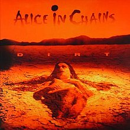

-

Facelift
Facelift is the debut studio album by the American rock band Alice in Chains, released by Columbia Records on August 21, 1990. The tracks "We Die Young", "Man in the Box", "Sea of Sorrow" and "Bleed the Freak" were released as singles. "Man In The Box" was nominated for a Grammy Award for Best Hard Rock Performance with Vocal in 1992. Facelift became the first album from the grunge movement to be certified gold on September 11, 1991. The album peaked at No. 42 on the Billboard 200 chart, was certified platinum and has gone on to be certified double-platinum by the RIAA for shipments of two million copies in the United States.
-

Sap
Sap is the second studio EP by the American rock band Alice in Chains, released on February 4, 1992, through Columbia Records. Sap is mostly acoustic and marks the first time that guitarist Jerry Cantrell sings lead vocals in an Alice in Chains release, with the song "Brother". The EP was produced by Alice in Chains and Rick Parashar and features guest vocals by Ann Wilson of the band Heart, Chris Cornell of Soundgarden and Mark Arm of Mudhoney. The track "Got Me Wrong" became a hit two years later after being featured on the soundtrack to the 1994 film Clerks. On January 14, 1994, Sap was certified gold by the RIAA for the sale of more than 500,000 copies.
-

Dirt
Dirt is the second studio album by the American rock band Alice in Chains, released on September 29, 1992, through Columbia Records. Peaking at No. 6 on the Billboard 200 chart, the album was also well received by music critics. It has since been certified four-times platinum by the RIAA and gone on to sell five million copies worldwide, making Dirt the band's highest selling album to date. It is the band's last album recorded with all four original members, as bassist Mike Starr was fired from the band in January 1993. The album spawned five singles: "Would?", "Them Bones", "Angry Chair", "Rooster", and "Down in a Hole"; all with accompanying music videos. Dirt was nominated for a Grammy Award for Best Hard Rock Performance. The music video for "Would?" was nominated for an MTV Video Music Award for Best Video from a Film, as the song was featured on the soundtrack to Cameron Crowe's 1992 film Singles. The songs on the album focused on depression, pain, anger, anti-social behavior, relationships, drug addiction (primarily heroin), war, death, and other emotionally charged topics. The track "Iron Gland" features Tom Araya from Slayer on vocals. Most of the music from the album was written by guitarist Jerry Cantrell, but for the first time vocalist Layne Staley wrote two songs by himself: "Hate to Feel" and "Angry Chair", both also feature Staley on guitar.
-

Jar Of Flies
Jar of Flies is the third studio EP by the American rock band Alice in Chains, released on January 25, 1994, through Columbia Records. This is Alice in Chains' second acoustic EP, preceded by 1992's Sap, and it is the first EP in music history to debut at No. 1 on the Billboard 200 chart, with the first week sales exceeding 141,000 copies in the United States. The self-produced EP was written and recorded over the course of just one week at the London Bridge Studio in Seattle. The tracks "No Excuses", "I Stay Away" and "Don't Follow" were released as singles to promote the album. Jar of Flies was nominated for two Grammy Awards in 1995: Best Recording Package and Best Hard Rock Performance for "I Stay Away". The EP was well received by critics and has been certified triple-platinum by the RIAA, selling 4 million copies worldwide, making Jar of Flies one of the band's most successful releases. In Canada, Jar of Flies was certified double-platinum for the sale of 200,000 copies
-
.jpeg)
Alice In Chains
Alice in Chains (occasionally informally referred to as The Dog Album, The Dog Record, and Tripod) is the self-titled third studio album by the American rock band Alice in Chains. It was released on November 7, 1995 through Columbia Records, and was the follow-up to the highly successful Dirt (1992). This is the band's first full-length studio album to feature bassist Mike Inez; their last album to feature original lead vocalist Layne Staley, who died in 2002; and their last album to be released on Columbia Records. The album debuted at No. 1 on the Billboard 200 and stayed on the chart for 46 weeks. The tracks "Grind", "Heaven Beside You" and "Again" were released as singles. "Grind" and "Again" were nominated for the Grammy Award for Best Hard Rock Performance. The album received double platinum certification from the RIAA and has sold over three million copies worldwide. The mockumentary The Nona Tapes was released to promote the album and became a cult hit. As with their previous releases, the album's songs focus on heavy subject matter such as depression, isolation, drug use, relationships, anger and death.
-
Black Gives Way To Blue
Black Gives Way to Blue is the fourth studio album by the American rock band Alice in Chains, released on September 29, 2009, on the 17th anniversary of the release of their second album, Dirt. It is their first record without original lead singer Layne Staley, who died in 2002, and their first album with new vocalist and rhythm guitarist William DuVall sharing vocal duties with lead guitarist/vocalist Jerry Cantrell, who sings lead vocals on most of the songs. The title track is a tribute to Staley featuring Elton John on piano. This is the first Alice in Chains album released on Virgin Records and their first venture away from Columbia, who handled all of their previous releases. The album debuted at No. 5 on the Billboard 200, and was certified gold by the RIAA on May 26, 2010, with shipments exceeding 500,000 copies in the U.S. and over 1 million copies sold.
-
The Devil Put Dinosaurs Here
The Devil Put Dinosaurs Here is the fifth studio album by the American rock band Alice in Chains, released on May 28, 2013 through Capitol Records (and the band's final album released by the label). It is the band's second reunion album. Following a worldwide tour in support of its previous album, Black Gives Way to Blue (2009), Alice in Chains began work on a new album. The making of The Devil Put Dinosaurs Here lasted for more than a year and the release of the album was delayed numerous times. The band entered the studio in July 2011 to start work on their fifth album. During the writing and recording sessions, guitarist and vocalist Jerry Cantrell underwent shoulder surgery, which resulted in the delay of the album. The recording sessions of The Devil Put Dinosaurs Here were completed in December 2012.
-

Rainier Fog
Rainier Fog is the sixth studio album by American rock band Alice in Chains, released on August 24, 2018, through BMG, the band's first release on the label. The title was inspired by Mount Rainier, a volcano that overlooks the Seattle-Tacoma metropolitan area, and the title track is a tribute to the Seattle music scene. This is the band's third album with William DuVall sharing lead vocals with Jerry Cantrell, and the first Alice in Chains album in 22 years to be recorded in their hometown of Seattle.